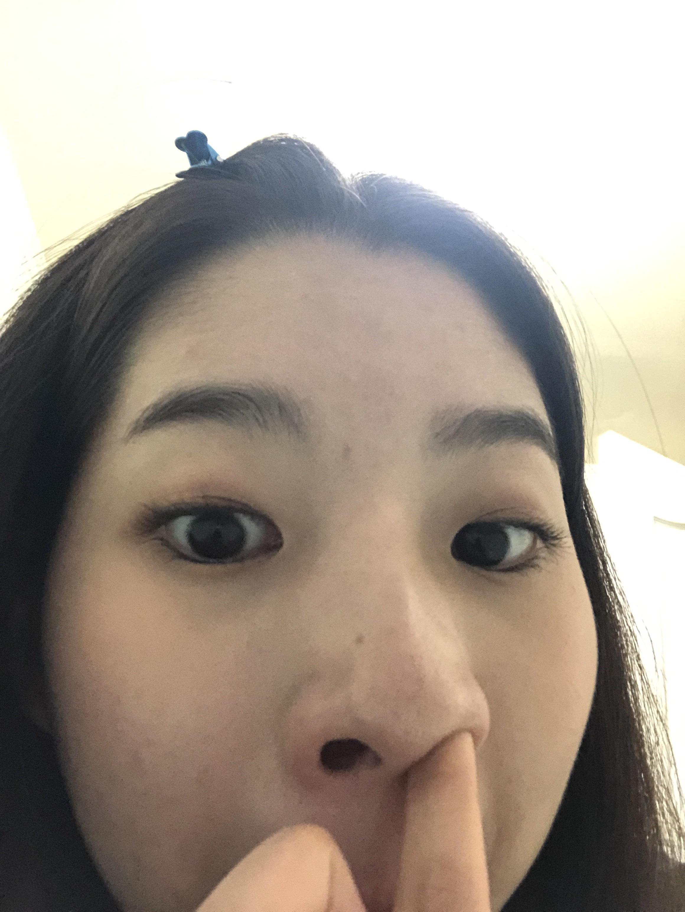

- HTML
- CSS
삼성전자의 IoT 생태계 혁신에 기여하고 싶습니다. 지난 1년간 SK텔레콤에서 AI 스피커 NUGU에 탑재될 ‘키워드 뉴스’ 서비스 기획 업무를 수행하면서, 바쁜 현대인들에게 원하는 정보만 빠르게 습득하는 ‘편리함’을 제공할 수 있다는 점이 가장 뿌듯했습니다. 또한 AI가 집, 편의점, 호텔, 차량 등 생활 전반에서 고객들의 일상을 풍요롭게 만든다는 가능성을 발견했습니다. 따라서 생활가전과 AI의 결합을 통해 진정한 ‘IoT 생태계 혁신’을 주도하고 있는 삼성전자 입사라는 꿈을 키우게 되었습니다. 가전을 IoT 허브로 삼고, 빅스비를 탑재하여 IoT 기반 스마트홈을 구현하는 삼성전자의 전략에 발 담그고 싶습니다.
- JavaScript
지혜림기침하지마

AI 서비스 업무를 수행하며 항상 고객의 입장에서 더 좋은 서비스와 ‘편리함’의 가치를 제공하고자 고민했던 과정은, 고객들의 문제에 공감하고, 해결책을 제시하여 그들의 가려운 곳을 긁어주는 영업 업무를 수행하는 데 기여할 것이라 확신합니다.
삼성전자에서 빌트인 생활가전 B2B 영업 전문가로 성장하고 싶습니다. 이를 위해 건설사와 인테리어 시장을 개척하여 삼성전자의 빌트인 가전제품을 영업하겠습니다. 이후 더 많은 고객들이 IoT를 기반으로 한 삼성전자의 스마트홈 솔루션의 가치를 경험할 수 있도록 현장에서 발로 뛰며 성장하는 모습을 보여드리겠습니다.